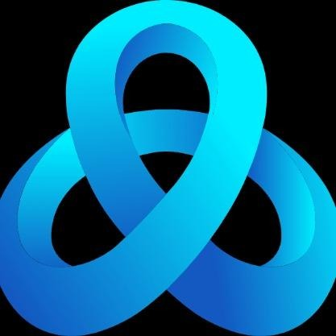

aiRis
"aiRis: Elevating Conversations, One Voice at a Time"
"aiRis: Elevating Conversations, One Voice at a Time"

We are developing an Android-based VoiceBot that leverages LLMs and faster-whisper speech recognition to deliver real-time, emotionally intelligent, context-aware conversations in Indian English, providing personalized, seamless human-like interactions.
Fine-Tuning LLaMA LLM for Conversational Accuracy: Adapting LLaMA to provide relevant, context-aware responses required extensive tuning to minimize hallucinations and ensure accuracy.
Managing Latency for Real-Time Interactions: Optimizing response times in the LLaMA model and minimizing delays was critical for a smooth, natural conversation flow.
Implementing High-Accuracy TTS: We chose Pyttsx3 for Text-to-Speech as it offered better accuracy and clearer pronunciation, enhancing the overall user experience.
Ensuring Context Awareness: Achieving consistent context retention in multi-turn conversations was a challenge, requiring careful management of conversation history.
Emotion Understanding for Personalized Responses: Analyzing user sentiment and adapting responses accordingly added complexity, but it was essential for creating an empathetic, engaging experience.
Building Personalized Conversations: Tailoring responses to the user's emotional tone and conversational style to create a sense of personalization presented unique challenges in natural language processing.
Speech Recognition: User speech input is analyzed using faster-whisper with Indian English accents for accurate transcription.
Text Processing: The transcribed text is passed through the Emotion Detection & Analyzer and Text Context Generator modules, which are fine-tuned to enhance conversational flow.
Combined Response Generation: LLaMA 3.2 processes the context and generates a conversational response, factoring in sentiment and content.
Text-to-Speech: Final responses are output to the user using espeak TTS.
aiRis is a conversational voice chatbot project that utilizes Whisper for speech recognition with an Indian English accent and the latest LLaMA 3.2 model for generating conversational responses. This guide walks you through setting up the system to work locally on your machine.